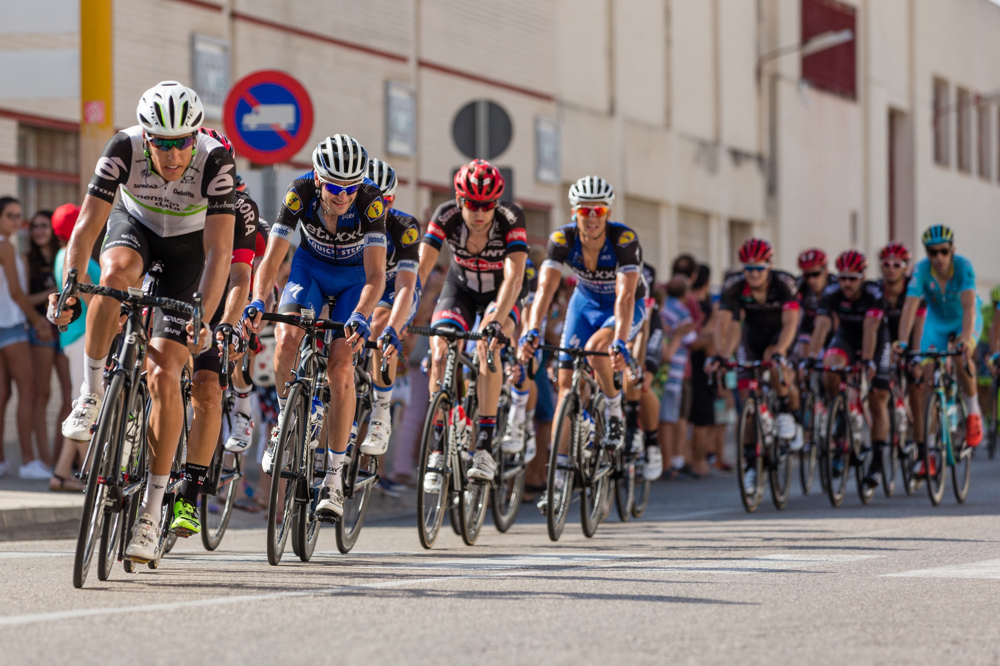
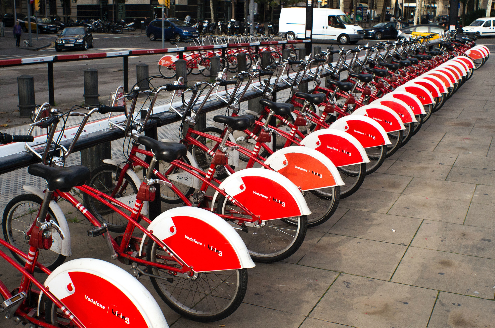

In this case study I used a fictional company "Cyclistics" data to find trends, patterns and
relationships between various data variables to answer different business questions. Then I created different visualizations to represent
my findings and finally I compiled a report for my stakeholders containing the business task at hand, the findings verified by visuals, the
conclusion and finally my recemmondations to solve the business problem.


In this case study I did data exploration, wrangling and analysis using Sql to solve a business problem for my stakeholders.

Here you can see all my Tableau dashoboards/reports and visualizations related to different data analysis projects.

In this project I analyzed a Fintess company's user data to find trends and correlations between different user types. The analysis revealed
usage and behavioral differnces between users which helped the company make different marketing strategy for different user types which resulted in business growth.
Click view project to find detailed information about project.

n this project I analyzed a Fintess company's user data to find trends and correlations between different user types. The analysis revealed
usage and behavioral differnces between users which helped the company make different marketing strategy for different user types which resulted in business growth.

In this project I used Covid data to find world wide infection rates and death counts due to Covid, then found death count and infection rates for all countries as well as continets. I also forecasted the future trends for some big countries and then finally
presented my findings in a tableau dashboard.

In this project I used Nashville housing data and used different data cleaning & wrangling techniques such removing duplicates, filling nulls, removing irrelivant data, assigning correct data types to variables, creating new useable columns from existing data etc
to prepare data for analysis